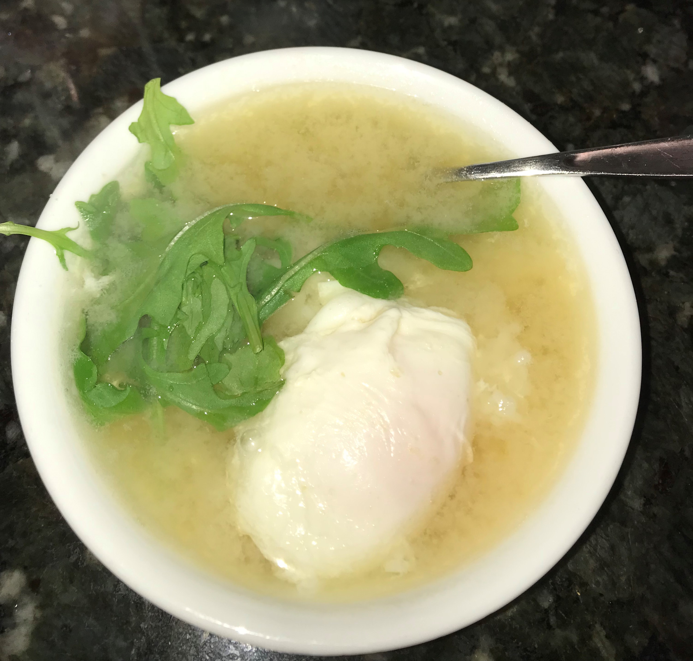

Introduction
This is an easy dish that I eat for a quick breakfast or snack before dance. It is quick dish taking 10 minutes maximum to cook.
It is filling and doesn't contain meat. The dish I will teach you how to make today is Egg miso soup and rice.
You only need 5 ingredients to make it and it only takes one pot to cook it all in.

Here I substituted veggies for dried seaweed for some extra greens.
Ingredients-These servings are just how much I eat if you want more use more
- 1½ scoops of leftover or freshly cooked rice
- 2 cups of water
- 1½ tablespoons of miso paste(I use this one)
- 1 scoop of dried seaweed-optional (This can be found in most asian superstores such as Tnt)
- 1 egg
- 1 small pot
Instructions
- Boil your water to 100°C.
- Microwave your rice for 1 minute or until hot/warm.
- When your water is boiling add your miso paste and stir until all of the miso paste is dissolved.
- Bring water back up to a boil and crack your egg in.
- Cook your egg for around 2-4 minutes depending on how runny you want your egg. (Note that if you want a intact egg yolk then DO NOT stir the soup while the egg is cooking)
- Optional: Add dried seaweed
- Pour soup onto rice and enjoy!